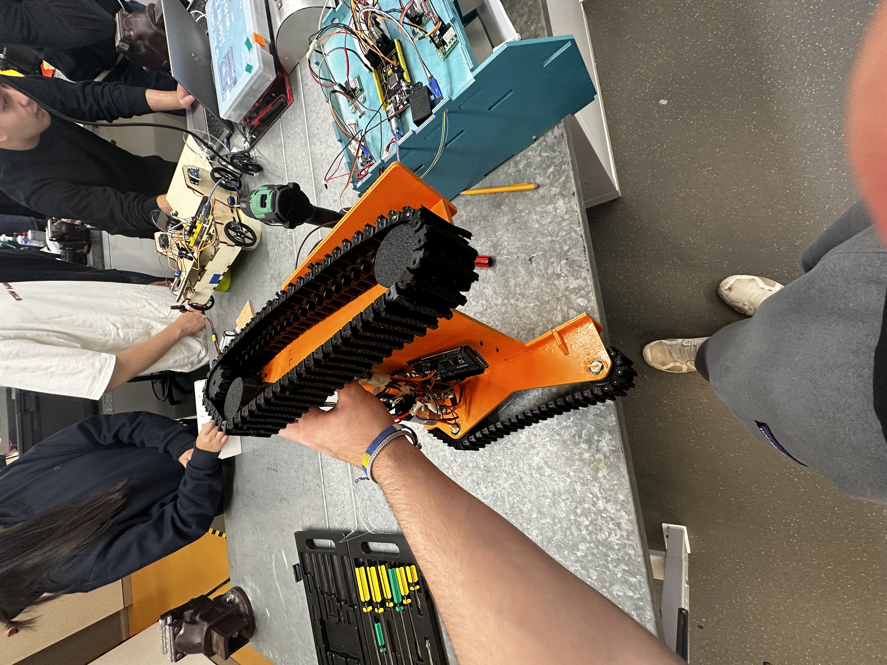
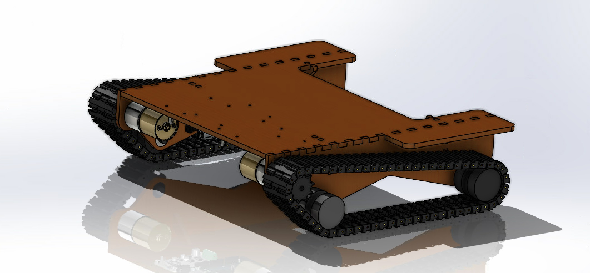

Feb 2025 - Jun 2025
Warman Challenge - Movement and Chassis Lead
A project page for documenting finishing strategy, surface quality targets, and the final passes that brought the geometry to spec.



